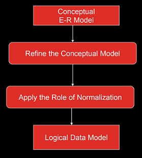
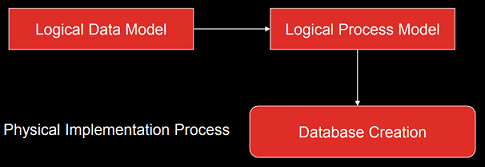

Tugas 3 Basis Data II
Database atau basis data adalah kumpulan informasi yang disimpan dalam komputer secara sistematik sehingga dapat diperiksa menggunakan suatu program komputer untuk memperoleh suatu informasi.
Sistem database dirancang untuk mengelola banyak informasi. Pengelolaan data melibatkan penentuan struktur untuk penyimpanan informasi dan penyediaan mekanisme untuk manipulasi informasi. Selain itu, sistem database harus memastikan keamanan informasi yang disimpan, meskipun sistem mengalami crash atau upaya akses yang tidak sah. Jika data akan dibagikan di antara beberapa pengguna, sistem harus menghindari kemungkinan hasil yang tidak wajar.
Secara khusus proses desain berisikan 2 aktifitas paralel. Aktifitas yang pertama melibatkan desain dari isi data dan struktur database, sedangkan aktifitas kedua mengenai desain pemrosesan database dan aplikasi-aplikasi perangkat lunak. Kedua aktifitas ini saling menjalin dan saling mempengaruhi satu sama lain.
6 tahap proses desain database:
Untuk menentukan kebutuhan-kebutuhan suatu sistem database, pertama-tama harus mengenal bagian-bagian lain dari sistem informasi yang akan berinteraksi dengan sistem database, termasuk para pemakai yang ada dan para pemakai yang baru serta aplikasi-aplikasinya. Kebutuhan-kebutuhan dari para pemakai dan aplikasi inilah yang kemudian dikumpulkan dan dianalisa.
Berikut aktifitas-aktifitas pengumpulan dan analisa data:
Berikut 3 pendekatan dalam manajemen kebutuhan:
Merupakan pendekatan kombinasi dari pendekatan terpusat dan pendekatan view integration.
Dimaksudkan untuk menghasilkan skema konseptual sebuah database menggunakan konsep model data tingkat tinggi. Dalam tahap ini ditampilkan objek yang menjadi domain database, tetapi belum dibahas tentang rincian implementasi.
Tahap desain database secara konseptual mempunyai 2 aktifitas paralel:
Skema konseptual ini bersifat tetap, mampu memberikan gambaran lengkap dari struktur basis data yaitu arti, hubungan, dan batasan-batasan, relationship, diagram, formal, minimmum dalam menyatakan spesifikasi data (tidak ada duplikasi) dan simple.
Desain transaksi dikelompokkan dalam 3 kategori:
Langkah Utama dalam memilih DBMS (Connoly):
Faktor-faktor dalam Pemilihan DBMS:
Pembelian perangkat lunak termasuk pilihan bahasa pilihan antar muka seperti form, menu dan antar muka Web berbasis GUI, pilihan recovery/backup.
Berhubungan dengan harga layanan pemeliharaan standar dari vendor dan untuk menjaga versi DBMS tetap up to date
Perangkat keras baru mungkin diperlukan seperti memory, terminal, disk drive dan controller baru atau penyimpan DBMS khusus.
Biaya pembuatan sistem basis data dari konversi sistem yang sudah ada ke perangkat lunak DBMS baru.
Akuisisi perangkat lunak DBMS untuk pertama kali oleh organisasi biasanya dilakukan dengan reorganisasi departemen data processing.
Karena DBMS biasanya berupa sistem komplek personal harus ditraining menggunakan dan memprogram DBMS Training diperlukan pada semua level, termasuk programming, pengembangan aplikasi dan administrasi basis data.
Biaya operasi lanjutan dari sistem basis data biasanya tidak termasuk dalam evaluasi.
Jika data yang disimpan dalam database mengikuti struktur hirarki, maka suatu jenis hirarki dari DBMS harus dipikirkan.
Jika staff programming dalam organisasi familiar dengan DBMS tertentu, dapat mengurangi biaya training dan waktu pembelajaran.
Keberadaan fasilitas pelayanan penjual untuk membantu memecahkan beberapa masalah sistem.
Pada tahap ini adalah membuat skema konseptual dan skema eksernal dalam model data dari DBMS terpilih.
Proses pemetaan dalam dua bentuk:
Pada bentuk ini pemetaan tidak mempertimbangkan karakteristik khusus atau kasus khusus yang diaplikasikan ke implementasi DBMS dari model data.
DBMS yang berbeda mengimplementasikan model data dengan menggunakan pemodelan khusus. Hasilnya merupakan pernyataan DDL dari DBMS yang dipilih.
Berikut tahap desain database secara logika:
Hasil dari tahap ini seperangkat perintah-perintah DDL dalam bahasa DBMS yang dipilih yang menentukan tingkat skema konseptual dan eksternal dari sistem database. Tetapi dalam beberapa hal, perintah-perintah DDL memasukkan parameter-parameter rancangan fisik sehingga DDL yang lengkap harus menunggu sampai tahap desain database secara fisik telah lengkap.
Desain database secara fisik merupakan proses pemilihan struktur penyimpanan dan jalur akses pada file-file basis data untuk mencapai penampilan yang terbaik pada bermacam-macam aplikasi. Kemudian dirancang spesifikasi-spesifikasi untuk basis data yang disimpan yang berhubungan dengan struktur-struktur penyimpanan fisik, penempatan record dan jalur akses.
Berikut tahap desain database secara fisik:
Beberapa petunjuk dalam pemilihan desain database secara fisik:
Jumlah ruang penyimpanan yang digunakan oleh file basis data dan struktur-struktur jalur akses.
Rata-rata jumlah transaksi yang dapat diproses per menit oleh sistem basis data, dan merupakan parameter kritis dari sistem transaksi (misal: digunakan pada pemesanan tempat di pesawat, bank, dll).
Kurniasih, Nuning. 2014. Proses Perancangan Database. Semarang: Universitas Padjajaran. https://bit.ly/36jyjMh.
Nusyirwan, Nurul. tth. Perancangan Database. Depok: Universitas Gunadarma. https://bit.ly/3igvDBI.
Silberschatz, Abraham, dkk. 2020. Database System Concepts, Seventh Edition. New York: McGraw-Hill Education.
Unknown. tth. Desain Basis Data. Semarang: Universitas Dian Nuswantoro. https://bit.ly/30hBfoP.